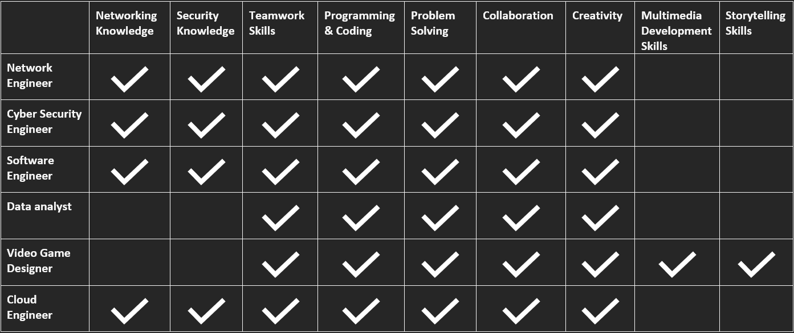

Ideal Jobs
Within our nuRecruITs group we have many different Ideal Jobs such as Network Engineer, Cybersecurity professional, Software Engineer, Data analyst, Video Game Designer and Cloud Engineer. These roles all require different technical skills and soft skills; however, some also share common requirements throughout. Here we outline each group members ideal profession and what skills are required. Comments are also provided to outline the similarities and differences between the professions.

Anthony Namroud – Cyber Security Engineer
Anthony’s ideal profession is a Cyber Security Engineer. A Cyber Security Engineer’s role is to design and develop security systems for networks and businesses. Attaining a qualification into cyber security requires at least two years of skill building, through an understanding of many computing languages to design and build programs, understanding the different components that make it all work and their functions, only gained through the knowledge base of various fields in IT such as computer science, network management and automation (Australian Government, n.d.). Some examples or required skills are:
- Experience in configuring and managing of security products such as firewalls, virus protection, URL filtering and information security.
- Ability to provide cost effective solutions.
- Implementing new security solutions for businesses.
- Identifying emerging and current technologies and security trends.
- Maintaining security hardware (Network Security Engineer job description and duties | Robert Half, 2021)
A Cyber Security Engineer shares many similarities with other ideal jobs within our group such as Network Engineer and Cloud Engineer. All of these professions require technical skills such as strong networking knowledge and security knowledge.
Bradley Pavey - Software Engineer
Bradley Pavey’s ideal profession is a Software Engineer. A Software Engineer’s main role will involve designing software but will also include maintaining, modifying, and debugging software as well (Indeed.com, 2021). Software engineers are required to know at least one, if not, many programming languages. These languages include:
- C#
- C++
- HTML
- Java
- JavaScript
- Perl
- PHP
- Python
Software engineers are expected to have exceptional problem-solving skills in order to identify problems in software and execute effective solutions. (Indeed.com, 2021)
A Software Engineer shares many similarities with other ideal jobs within our group such as Data Analyst and Video Game Designer. All of these professions require technical skills such as strong programming knowledge across many languages as well as soft skills such as creativity, problem solving and excellent collaboration and teamwork skills.
Nicholas Richards - Data Analyst
Nicholas Richards’ ideal job is a Data Analyst. A data analyst role will involve collating volumes of data from various sources and creating powerful statistics and meaningful narratives from the data, in order to compellingly present to a variety of audiences on user experiences and the successes of the programs. (Eastwood, 2019)
The position requires enthusiastic and incisive data management and analysis skills, and a passion for discovering trends and insights from disorganised and eclectic data sets. The result is the transformation of complex data into comprehensible and persuasive presentations (Olavsrud, 2020). Apart from IT skills in database management, SQL and Excel, and data dashboarding and reporting, the role requires project management skills to plan, execute and deliver the required outcomes (Grupman, 2021).
A Data Analyst shares many similarities with other ideal jobs within our group such as Video Game Designer and Software Engineer. All of these professions require technical skills such as strong programming knowledge across many languages as well as soft skills such as creativity, problem solving and excellent collaboration and teamwork skills.
Jeremy Baker - Cloud Engineer
Jeremy Baker’s ideal profession is a Cloud Engineer. A Cloud Engineer’s role consists of developing and implementing cloud-based systems for networks and businesses. Cloud Engineers develop and deploy cloud applications, migrate existing servers and applications to a virtual environment and manage cloud-based network security (Intellipaat, 2021). To become a Cloud Engineer, a degree in computer science or a similar degree is required as well as three years of experience in cloud computing (Cloud Engineer Job Description, 2021). Cloud Engineers are expected to have a wide range of skills such as:
- Maintaining cloud solutions
- Networking knowledge
- Collaboration skills.
- Knowledge in improving existing systems.
- Ability to educate other team members about emerging cloud technologies.
- Client management skills
- Familiarity with DevOps Methodology
- Experience with CI/CD systems
- Azure, AWS, and GCP certifications
- Troubleshooting skills (Cloud Engineer Job Description, 2021)
A Cloud Engineer shares many similarities with other ideal jobs within our group such as Cyber Security Engineer and Network Engineer. All of these professions require technical skills such as strong networking knowledge and security knowledge.
Jacob Brakespeare - Video Game Designer
Jacob Brakespeare’s ideal job is a Game Designer. Game Designers work alongside Animators, Game Developers and Producers to produce new and exciting video games for consumers (skills and careers, 2021). Game designers are required to have excellent collaboration and teamwork skills, as well as programming knowledge and knowledge of multimedia development software. Game designers are required to manage time effectively to produce games with exceptional levels of creativity and design consideration. Game Designers will be required to work in a team and will be required to effectively communicate with team members. Game Designers must have the skill to adapt to their audience to produce games that are captivating and exciting to play (Walsh et al., 2021). Game Design is a very competitive industry, a portfolio of completed works is essential in this career to show potential employers what you are capable of (Indeed.com, 2021). A degree in computer games design, graphic design or animation is typically required to acquire a role as Game Designer
A Video Game Designer shares many similarities with other ideal jobs within our group such as Data Analyst and Software Engineer. All of these professions require technical skills such as strong programming knowledge across many languages as well as soft skills such as creativity, problem solving and excellent collaboration and teamwork skills.
Lachlan Jensen - Network Engineer
Lachlan Jensen’s ideal profession is a Network Engineer. A Network Engineer is a highly skilled position and often requires someone who has a wide range of experience. Network Engineers must be able to design and implement networking solutions for businesses to improve efficiency, security, and ease of communication within a business network (Network engineer job profile | Prospects.ac.uk, 2021). A Network Engineer role involves many different aspects of IT which all require a lot of experience and previous knowledge, such as:
- Installation, Configuration and monitoring of routers, switches, and other networking devices
- Installation, Configuration and monitoring of server machines
- Monitoring the network and troubleshooting any issues that arise
- CCNA R&S certification
- Extensive knowledge of network management and troubleshooting
- Experience at a Managed Service Provider
- Experience configuring firewalls
- An extensive understanding of enterprise routing protocols
- An extensive understanding of enterprise switching protocols such as VLANs, Spanning Tree and HSRP
- Experience administering VoIP platforms
- Experience configuring IPsec site-to-site VPNs (SEEK.com, 2021)
(Network Engineer job description and duties | Robert Half, 2021)
A Network Engineer shares many similarities with other ideal jobs within our group such as Cyber Security Engineer and Cloud Engineer. All of these professions require technical skills such as strong networking knowledge and security knowledge
Conclusion
Although we have many different ideal jobs within the nuRecruITs group there are many common skill requirements throughout these jobs, and any job within the IT industry. The table above highlights this by showing many skills as common requirements across all professions. This emphasises the importance of building skills across many different fields while studying. Technical skills such as networking, programming and security skills are common requirements across many of our chosen career pathways, this shows us that with the skills we build, we will be equipped to succeed across many different IT fields. As our ideal career choice evolves this wide range of skills will allow us to follow our ideals. Soft skills such as teamwork, collaboration, creativity and problem-solving are required throughout every one of our ideal career choices and this shows how important it is to focus effort on these skills throughout our studies and into the workforce.